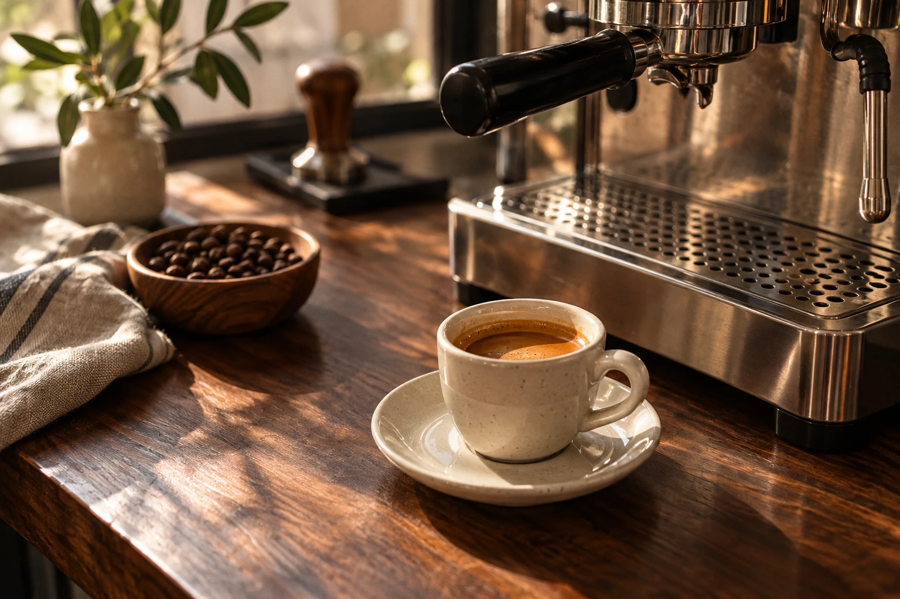

КофейняВаше утро
Ваше утро
может подождать.
Кофе, немного тишины и столик у окна. Место, где можно замедлиться перед длинным днём.
Посмотреть меню
С чего начнём?
Меню вымышленного заведения. Заказы и бронирование не принимаются.
Почему так?
Для локального заведения важно быстро найти меню и почувствовать атмосферу. Тёплые оттенки и крупные названия делают этот пример дружелюбнее.
Это пример подачи сайта. Бренд и визуал вымышлены; интеграции с оплатой, заказами или бронированием отсутствуют.
Обсудить похожий сайт